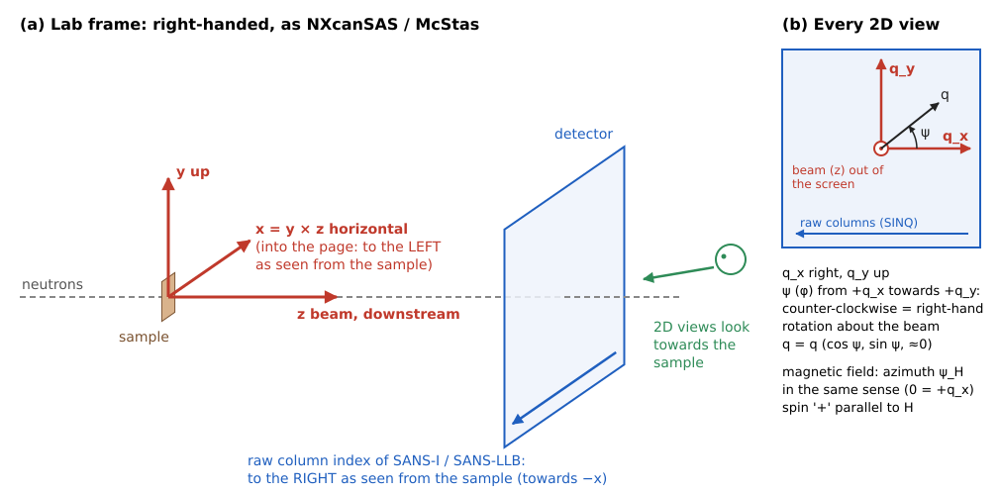

Axis and angle conventions
All tools of pySASfit use one lab frame and show every detector plane the same way. pySASred, pyTOOLbox, pySASstudio (2D map), pySCAtter and pySASmorph (anisotropic) follow these rules.

Lab frame
The frame is right-handed and is the frame of NXcanSAS and McStas:
axis |
direction |
|---|---|
z |
along the beam, downstream (sample → detector) |
y |
vertical, up |
x = y × z |
horizontal: to the left as seen from the sample looking downstream, to the right as seen from behind the detector looking towards the sample |
The scattering vector on the detector is q = (q_x, q_y, q_z), with q_z ≈ 0 at small angles.
How 2D data are shown
Every detector image, q map, model map and polar view is shown as seen looking towards the sample. The beam comes out of the screen towards the viewer, q_x points to the right and q_y up. This is the only view in which a right-handed frame has “horizontal to the right, vertical up”. From the sample side one of the two axes would have to be mirrored.
Images in detector pixels follow the same rule. Their data coordinates stay column and row indices, so mask tools and the beam centre work as before.
SANS-I and SANS-LLB (central detector): the raw column index grows to the right as seen from the sample, i.e. towards −x. In the views the columns therefore run from right to left (
column_sign = −1).SANS-LLB wide-angle panels: the panels are oriented by the NICOS pixel positions. posx and posy are lab x and y, and the panel called “left” sits at posx > 0.
HDF5 viewer of pyTOOLbox: it is a general dataset browser. It shows arrays as arrays (index 0 at the left and bottom), not as a detector view. To 2D data passes an image on to the 2D page, which follows the rules above.
Angles
Azimuth ψ (pySASred and pyTOOLbox call it φ): the direction of q on the detector, measured from +q_x towards +q_y, so q = q (cos ψ, sin ψ, 0). This is counter-clockwise in every view and a positive (right-hand) rotation about the beam direction.
Sectors, A(q) + B(q) sin²(ψ − ψ₀) and azimuthal profiles use this ψ.
ψ parameter of anisotropic SASfit functions (pySASstudio 2D map): the same ψ.
Rotations about the beam (pySCAtter lattice ψ, particle director φ): the same sense.
Magnetic field: its direction on the detector is the azimuth ψ_H in the same sense (0 = along +q_x). Magnetic models use ψ − ψ_H, the angle between q and the field.
Neutron spin states: “+” is the neutron spin parallel to the field (guide field), “−” antiparallel (Moon, Riste & Koehler, Phys. Rev. 181, 920 (1969)). Spin parallel to the magnetisation adds the magnetic amplitude: I++ = NN + MH + 2NM. Michels and the SASfit C functions label by the neutron moment (their “++” is “−−” here; SASfit’s
pol= +1 is spin antiparallel).
Internal frames of the tools
Some tools keep their own internal axis names. The table gives what they mean in the frame above.
tool |
internal frame |
relation to the pySASfit frame |
|---|---|---|
pySASred, pyTOOLbox, NXcanSAS files |
x horizontal, y up, z beam |
identical |
pySCAtter (engine, lattice viewer) |
x beam, y horizontal, z up (right-handed) |
engine y = x, engine z = y, engine x = z (cyclic: same handedness) |
pySASstudio 2D map |
q_x, q_y |
identical |
pySASmorph, anisotropic |
box x = symmetry axis, box z = beam |
detector plane = box (x, y); data q_x, q_y as in the files |
Michels (magnetic SANS literature) |
x beam, field H ∥ z |
with H along +q_x: x_M = z, z_M = x, y_M = −y; θ_M = −(ψ − ψ_H). The geometric factors are identical, because both frames are right-handed; the spin labels differ (Michels: neutron moment, here: spin, so his ++ is −− here). |
Changes of 2026-11-23
Before this date pySASred took the raw column direction as +x. Its images were shown as seen from the sample, and q_x had the opposite sign of the frame above. The following changed:
Detector images: pySASred, pyTOOLbox and the efficiency maps are now mirrored left–right.
Sector averages: the angle φ is measured in the new frame. Horizontal (0°) and vertical (90°) sectors are unchanged. An oblique sector at φ now corresponds to the old 180° − φ.
pySASred 2D NXcanSAS files: the SASdata group carries the attribute
pysasfit_frame.Older 2D files: files written by pySASred before this date have no
pysasfit_frameattribute. pyTOOLbox and pySASmorph recognise them and correct the sign of Qx when reading. pyTOOLbox recomputes q from the beam centre and the pixel size anyway.pySCAtter: the axes are now labelled q_x, q_y (formerly q_h, q_v). The 2D map of pySASstudio uses q_x, q_y (formerly q_y, q_z). Neither image changed; only the names did.